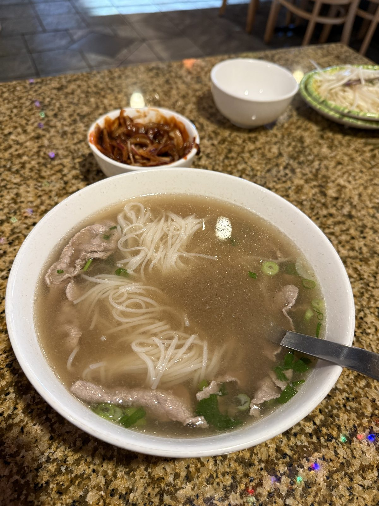
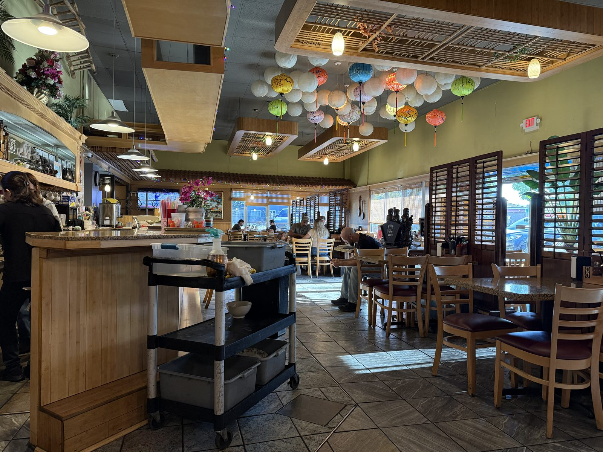
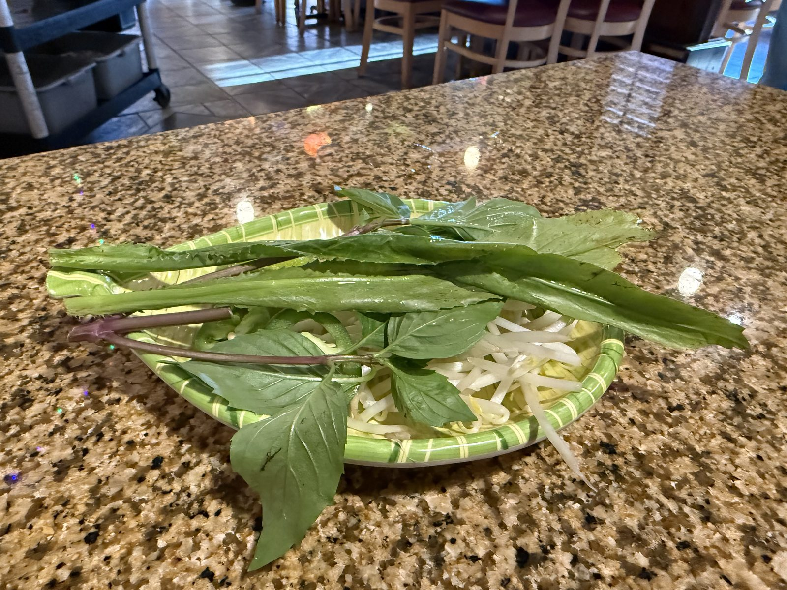
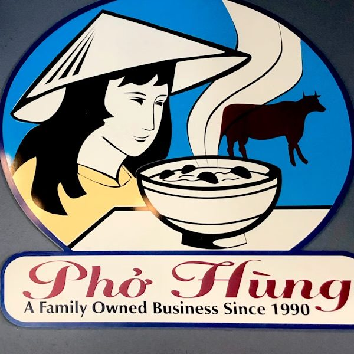

The Correct Way to Eat Pho, at Pho Hung

Lunch was a bowl of beef pho at Pho Hung, on SE 82nd Avenue in Portland, Oregon — the kind of restaurant most people drive past a hundred times before they ever walk in. Green walls, wood-shuttered windows, and a ceiling strung with a cluster of paper lanterns in every color, the sort of place that's clearly been feeding the same neighborhood for a long time and isn't trying to prove anything to anyone new.

How do you actually eat a bowl of pho?
Here's the part most people skip past without ever being told: pho isn't a soup you just spoon up straight out of the bowl. There's a correct way to build a bite, and almost nobody outside the culture ever learns it. It goes like this.
- Mix a half portion of hoisin sauce with a half portion of sriracha, together, into one little dish.
- Take your Asian soup spoon and lay a small amount of noodles neatly into it.
- Set one smaller piece of the meat on top of the noodles.
- Dip the loaded spoon slightly into the broth, just enough to pick up a little of it.
- Top it with a small bit of the pickled onion.
That's the whole bite — noodles, meat, broth, onion, all in one spoonful, built in that order. Do it that way and every mouthful gets a little of everything instead of a bowl where the noodles, the beef and the broth never actually meet until they're diluted together at the bottom.
The little cup most people never ask about
Almost every pho counter sets out a small cup of what looks like nothing much — thin strips of onion sitting in a reddish liquid. Most Americans never ask what it is, and most servers never explain it unless you do. It's called hành dấm — onion pickled in vinegar, sometimes anglicized as "hun yum," which is close enough to how it sounds that the name's easy to mishear as something else entirely. It's just onion and vinegar, usually with a little sugar, and it's the fifth ingredient in the bite above — the sharp, sour counterpoint that keeps a rich beef broth from getting one-note by the bottom of the bowl.
What about the vegetable plate?
Pho Hung also brings out a side plate of Thai basil, bean sprouts, and sawtooth herb — the classic pho garnish tray. Some diners, especially non-Americans who grew up eating it this way, tear the leaves in and pile the sprouts on top before they start. I don't. I'm not a vegetable person, so mine stayed on the plate the whole meal — but if you like the tray, I'd expect it only adds to the bowl, not takes away from it.

Where the name over the door gets complicated
The sign out front reads "Pho Hung — A Family Owned Business Since 1990," and it's worth knowing that comes with an asterisk. There are two separate Pho Hung restaurants in Portland sharing that name and that logo — the original on SE Powell Blvd, which really has been running continuously since 1990, and this one on 82nd Avenue, which is under separate ownership and carries the same branding. Both are worth trusting on their own merits; just don't assume the "since 1990" on the sign is dating the building you're sitting in.

The practical bit
Pho Hung — 3120 SE 82nd Ave, Portland, Oregon 97266. 📍 Get directions
Phone: (503) 772-0089.
Hours: generally late morning to evening, daily — listings don't all agree down to the hour, so a quick call ahead is worth it if you're driving in from across town.
Worth knowing: ask for the hành dấm and the hoisin/sriracha dish if they don't land on the table automatically, and build the bite — noodles, meat, a dip of broth, a pinch of onion — rather than just stirring everything together and eating around it.
Noodles in the spoon, meat on top, a dip of broth, a pinch of onion. That's the bite.